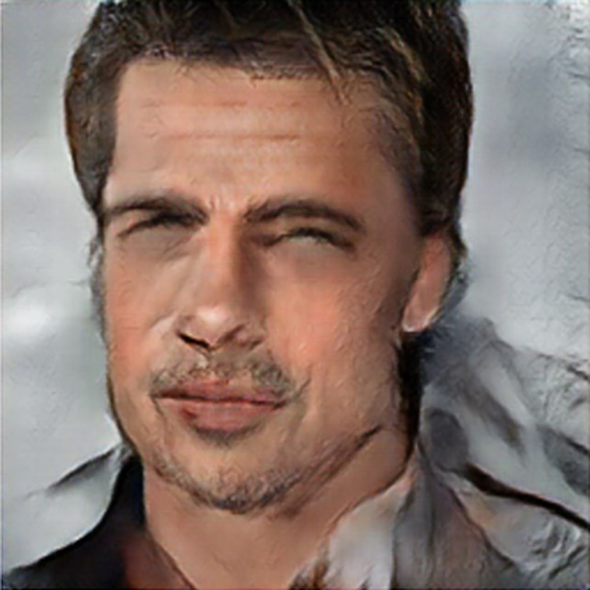

|  |


Your Cooked Face is Ready!Here's your cooked face based on the above three ingredients and proportions. This image is created from pix2pix which is a shorthand for an implementation of a generic
image-to-image translation using conditional adversarial networks. This runs over TensorFlow - an open-source software library for dataflow programming across a range of tasks including machine learning.
|